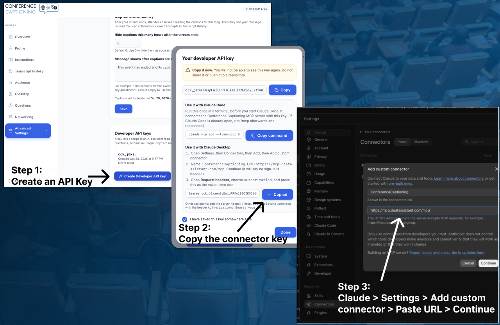
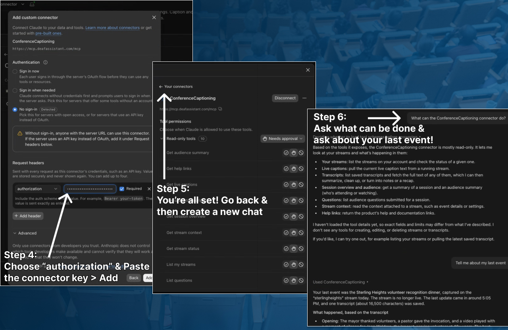

Ask your AI assistant about your event: the ConferenceCaptioning MCP server
 Saamer Mansoor•
Saamer Mansoor•
The ConferenceCaptioning MCP server lets an AI assistant such as Claude read your live captions, your saved transcripts and your audience questions. You can then ask it for meeting minutes, action items, a ranked list of audience questions, or a quick catch-up on what was just said. It is hosted for you at https://mcp.deafassistant.com/mcp, it is read-only, and nothing needs to be installed. You connect it with a developer API key from your portal.
What the assistant can and cannot do
MCP (the Model Context Protocol) is the standard way for an AI assistant to use outside tools. This server gives it ten tools, all of which only read:
- get_session_overview: start here. It says what exists for a stream (live or probably stopped, how much live text is held, whether transcripts were saved, how many questions, whether there is a glossary) and what to read next.
- list_my_streams: the streams your key can read.
- get_stream_status: whether a stream is live, its languages, and whether it can be read.
- get_live_captions: the newest caption text, in the spoken language or one of the stream's translations.
- get_stream_context: the stream's design and its glossary (the names and terms you expect).
- list_saved_transcripts and get_saved_transcript: your saved transcripts, with title, note and times, and the text of one at a time.
- list_questions: the questions your audience sent from the stream page.
- get_audience_summary: how many times the stream's attendee page was opened, with peak times, top cities, referrers and devices. It counts page loads, not people or time spent watching.
- get_help_links: links to our how-to guides, for when you ask the assistant how to set something up.
It cannot start or stop a stream, change your settings, edit a transcript or delete anything. The tool descriptions and the built-in prompts (meeting minutes, triage questions, catch me up, translate a summary) also tell the assistant to say what it cannot see, instead of guessing.
Set it up in three steps
Step 1: Create a developer API key
- Sign in to the ConferenceCaptioning portal and open Advanced Settings.
- Under Developer API keys, choose Create Developer API Key, read the explanation, tick the box and create the key.
- Copy the key. It is shown once. The dialog has a copy button next to the Claude Desktop value (it already starts with the word Bearer), and one for the Claude Code command. The key itself starts with cck_. It is read-only, you can have up to 2 keys, and you can delete one at any time.

Step 2: Add the connector in your assistant
Claude Desktop (tested):
- Open Settings, then Connectors, then Add, then Add custom connector.
- Name it ConferenceCaptioning, enter the address https://mcp.deafassistant.com/mcp, and choose Continue. It will say there is no sign-in. That is expected, because this server does not use OAuth.
- On the sign-in screen, leave No sign-in selected. Under Request headers, choose authorization as the name and paste the value you copied, which reads Bearer cck_....
- Choose Add.

Claude Code: run this once in a terminal, before you start Claude Code (if it is already open, run /mcp afterwards and reconnect):
claude mcp add --transport http confcap https://mcp.deafassistant.com/mcp --header "Authorization: Bearer cck_..."The portal's key dialog shows both setups with your key already filled in. Other assistants: add a remote MCP server with the same address and the same header. Assistants that only offer an OAuth sign-in cannot connect yet.
Step 3: Check that it works
Start a chat and ask: "What can the ConferenceCaptioning connector do?" Then try "Give me an overview of my stream." If your key owns more than one stream, tell the assistant which one to use.
Five prompts that work
The examples below use a made-up event and made-up people. They show the kind of answer to expect. They are not real output from a real session.
1. Write minutes from a saved transcript
Write minutes for the Opening Session transcript. Use our glossary to fix names.
The assistant starts with get_session_overview, finds the transcript with list_saved_transcripts, reads it with get_saved_transcript (paging through long ones), checks the glossary with get_stream_context, and writes the minutes.
Example (made-up event): "Minutes, Riverbend Community Summit, Opening Session. Decisions: volunteer sign-up moves to the new form. Open items: the venue map needs a second accessible entrance. Note: machine-captioned, so check names."
2. Pull out action items and quotes
List every action item with the person who took it, and pull three quotes I could use in the recap email.
It reads the same saved transcript and returns action items with owners where the speaker named one, plus short quotes. Ask it to mark any quote it is unsure of, since captions are machine-generated.
Example (made-up event): "Action: Jordan sends the final schedule to volunteers by Friday. Quote: 'Nobody should have to ask for captions twice.'"
3. Triage audience questions
Group the audience questions by topic, merge duplicates, rank the topics by how many people asked, and draft a one-line answer for each.
It uses list_questions and does the sorting for you, which is useful when a Q&A has more questions than the host has time for. You can add since 2:00 pm to look only at newer questions.
Example (made-up event): "Topic 1, parking and access (5 questions). Draft answer: accessible parking is next to the east entrance. Topic 2, session recordings (3 questions). Draft answer: recordings will be shared after the event."
4. Check names against your glossary
Compare the names and terms in the Opening Session transcript with our glossary, and list any that look mis-heard.
Captions are machine-generated, so unusual names can come out wrong. The assistant reads your stream's glossary with get_stream_context and flags likely mix-ups before you quote anyone. A good glossary makes the captions better as well.
Example (made-up event): "The transcript has 'Priya Nye' three times. The glossary has 'Priya Nair'. Suggested fix: Priya Nair."
5. Catch me up, before or during the event
Catch me up on the last 10 minutes of the live stream. Give me three bullets, then list any names, numbers and decisions.
It reads the newest live captions with get_live_captions and summarises them. If the stream has gone quiet for several minutes, the assistant is told it has probably stopped, so it does not describe old text as current.
Example (made-up event): "Three bullets: the keynote ended, the panel on community access started, and the host announced a 15-minute break. Names: Dana Whitfield (host). Decision: the afternoon workshops start at 1:30."
How it is kept safe
- Read-only. The server only reads. It has no way to write or delete, and the developer API key is read-only on our side as well.
- Your key is yours to revoke. You can have up to 2 keys, the portal shows when each was last used, and deleting one stops it at once. We store only a hashed version of the key, so we cannot show it to you again.
- Other people's words are marked as data. Text from speakers and attendees is passed to the assistant inside a block marked as untrusted, with a note that it is data and not instructions. That helps protect against someone speaking or typing a question that tries to give the assistant orders.
- The key stays in the connection. It is sent as a header, never typed into a tool, and it is stripped from error messages.
Where your text goes. Whatever the assistant reads is sent to the AI provider you chose to connect, under that provider's terms. That is your decision as the organizer. If you promised attendees that captions stay private, check the provider's terms before you connect. Treat the configuration file or connector that holds your key like a password file.
Limits to know about
- The live feed is a window. It holds a limited amount of recent text, not a whole long session. A finished session can be read in full only if a transcript was saved.
- Saved transcripts need a signed-in account. They are kept for streams registered to a signed-in account, unless you turned on "Disable storing transcript to my account". Very short sessions are not kept.
- Translations are not stored. Live translations are a window of recent text that is re-translated as people speak. Saved transcripts are in the spoken language only, so ask the assistant to translate them.
- Captions are machine-generated. Names can be mis-heard. Your stream's glossary helps, and the assistant should say so when it quotes someone.
- No OAuth sign-in yet. Assistants that only offer OAuth cannot connect. Those that accept a custom header can.
For developers
The same key works with the read-only REST API, so a script can read captions, saved transcripts and questions without an assistant. The endpoints, limits and error codes are on the Developer API page. The MCP server's source is open under the MIT licence at github.com/TheFirstPrototype/ConfCapMcp, and it is listed in the official MCP Registry as io.github.TheFirstPrototype/confcap (registry entry). A client that only speaks stdio can bridge to the hosted server with npx mcp-remote https://mcp.deafassistant.com/mcp --header "Authorization: Bearer cck_...".
Frequently asked questions
What is the ConferenceCaptioning MCP server?
It is a hosted, read-only connection that lets an AI assistant such as Claude read your stream's live captions, your saved transcripts and your audience questions. You connect it with a developer API key you create in the portal. Nothing is installed.
Do I need to install anything?
No. The server is hosted at https://mcp.deafassistant.com/mcp. You add that address to your AI assistant, along with your developer API key as an Authorization header.
Can the AI assistant start or stop my stream, or change anything?
No. The server is read-only. It has no tool that starts or stops a stream, edits a transcript, or deletes anything, and the developer API key is read-only too.
Which AI assistants can connect?
Claude Desktop (tested) and Claude Code. Any other assistant that supports remote MCP servers with a custom header can connect with the same address and key. Assistants that only offer an OAuth sign-in cannot connect yet, because the server does not use OAuth.
Where does my caption text go?
Whatever the assistant reads is sent to the AI provider you chose to connect, under that provider's terms. That is your choice as the organizer. If you promised attendees that captions stay private, check the provider's terms first.
Can the assistant read a whole finished session?
Only if a transcript was saved. The live feed holds a limited window of recent text. Saved transcripts exist for streams registered to a signed-in account that have not turned off "Disable storing transcript to my account". The assistant is told what exists and says so when it cannot see something.
Can it read my saved transcripts in another language?
Saved transcripts are stored in the spoken language. Ask the assistant to translate or summarise them in the language you need. Captions are machine-generated, so check names and numbers before you publish anything.
How do I stop an assistant from reading my events?
Delete the developer API key in Advanced Settings in the portal. It stops working immediately, and you can create another. You can also remove the connector from your assistant.
Want to try it on your next event?
Create a read-only developer key, connect your assistant, and ask it about your event. Questions about setup, or need more than 2 keys? Tell us about your event and we will help.
Related Articles
Control Live Captions with an Elgato Stream Deck (Bitfocus Companion, No Internet)
Start, stop, show and hide live captions and translations from an Elgato Stream Deck using the free Bitfocus Companion module.
Live Captions and Translation at Events, Without Venue Internet
How to run on-device live captions and translation in a room with unreliable Wi-Fi: screens first, a backup device, and a pre-event checklist.